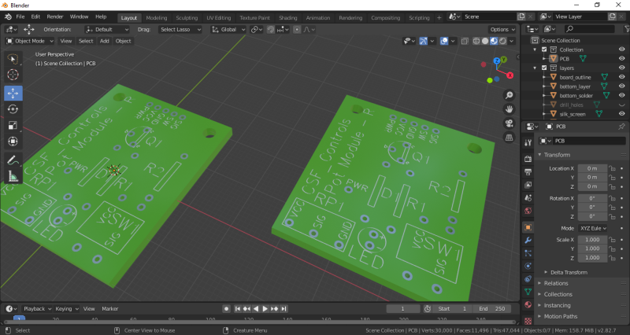
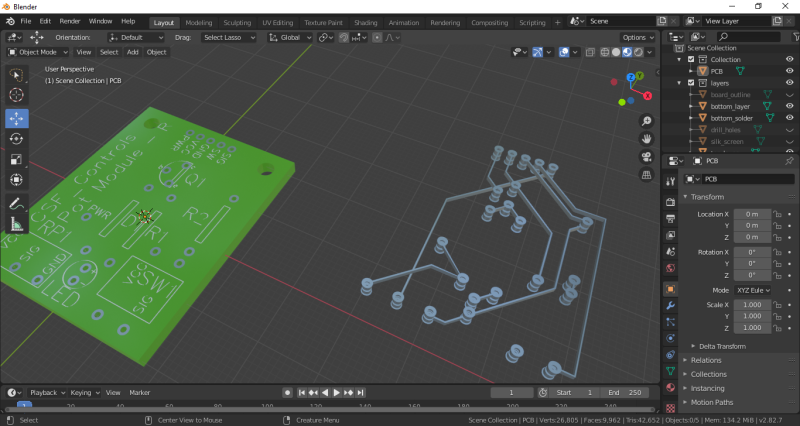
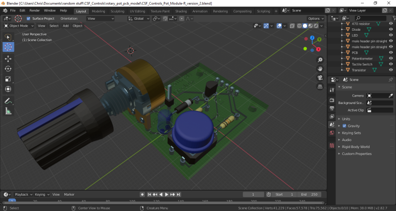
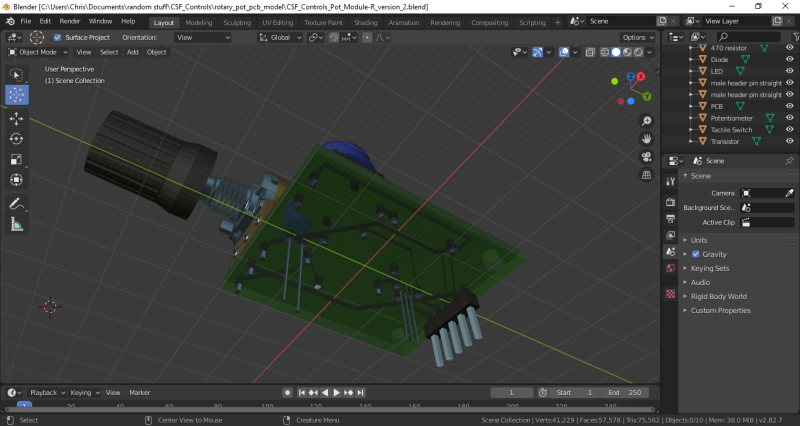

|
Gerber To Blender Import
|
This module contains methods to import svg file exports from a collection of Gerber files and automatically turns the imports into a 3D model of the PCB in Blender.
For putting it together and only testing so far, the PCB was designed using EasyEDA online circuit editing software. The exported Gerber files were opened in gerbv Gerber Viewer software, from which the SVG files were exported. The components of the model will be named identical to the SVG files.
Here are some pictures of example files generated by this plug-in. The first couple are of the resultant board models, one as produced and one with a couple layers turned off. The second set shows the generated board models used with components downloaded from GrabCad.com or modeled myself.
 
 
Here is a sample output of create_pcb_view.py.
Developed By: Christopher S. Francis 25 June 2020 to ...
1.8.18